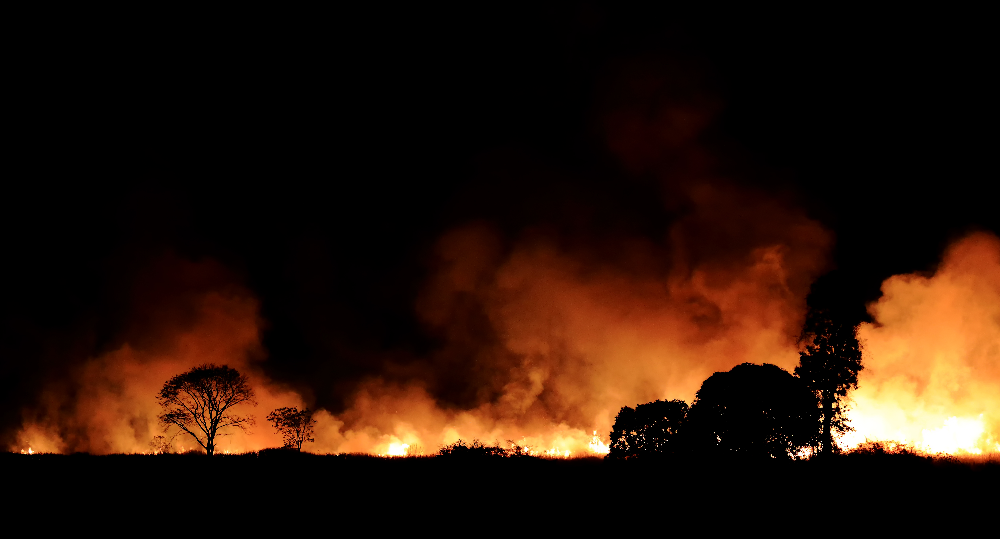

Queimadas: Impactos no Meio Ambiente
As queimadas são uma das maiores causas de desmatamento e degradação ambiental, afetando a biodiversidade, a qualidade do ar, e contribuindo para o aquecimento global.
As queimadas são uma das maiores causas de desmatamento e degradação ambiental, afetando a biodiversidade, a qualidade do ar, e contribuindo para o aquecimento global.
As queimadas podem ser causadas por fatores naturais ou pela ação humana, como o desmatamento e a agricultura.
As queimadas afetam a qualidade do ar, promovem a perda de biodiversidade e aceleram as mudanças climáticas.
A educação ambiental, o monitoramento e as políticas públicas são essenciais para prevenir e combater as queimadas.